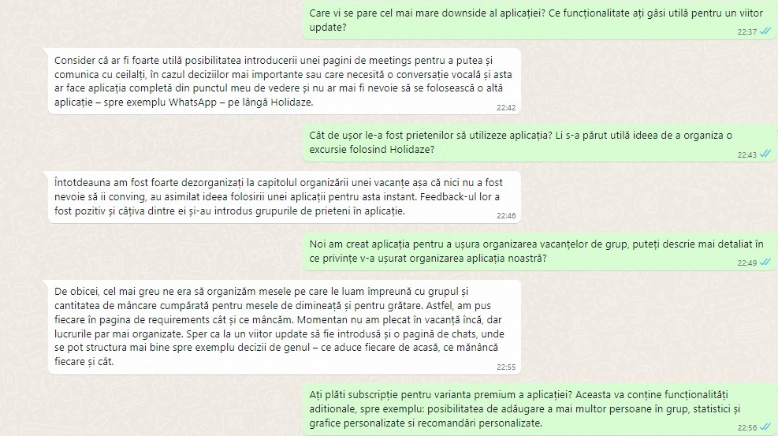

<!-- description Section -->
<section id="m8">
    <div class="container">
        <div class="row">
            <div class="col-lg-12 text-center">
                <h2 class="section-heading">Milestone 8</h2>
                <p><br></p>
                <div class="col-lg-12 text-center">
                    <h3 class="section-heading">Interviews</h3>
                    <p>We shared the MVP with frequent travelers, aged 20-30, which we considered to be our target audience. After letting them tried the application in its current state, they gave us useful feedback.</p>
                    </img>
                    <br/><br/>
                </div>
                <div class="col-lg-12 text-center">
                    <h3 class="section-heading">Conclusions</h3>
                    <p>After the interviews, the vision of our product has taken shape: we know what we have to improve and most importantly, the clients had a good opinion about subscribing to our app. People have claimed that:</p>
                    <ul>
                        <li>The requirements page could also use a dislike button and various recommendations according to the most common needs expressed by group members.</li>
                        <li>The suggestions page is highly appreciated by users and the application interface is intuitive and easy to use.</li>
                        <li>Increasing the comfort level of users and bypassing the small conflicts that arise when group decisions are made. The app also provides better organization as well as timely and accurate portrayal of all requirements.</li>
                        <li>Our application has a place in the market, which is highlighted by those who have already tried the Holidaze experience. Following these interviews, we acquired validation from users that they would pay subcription for the premium version of our product. Their encouragement quickly pushes our application to the market and motivate us to continue its development in an accelerated manner.</li>
                    </ul>
                    <p>Future implementations based on our users' experience:</p>
                    <ul>
                        <li>A dashboard that includes all the decisions made by group members, where the admin will be able to rank them according to their importance as well as display them in an organized and intuitive manner.</li>
                        <li>A page of meetings and charts where decisions that require input from members and not just votes can be made.</li>
                     </ul>
                </div>
            </div>
        </div>
    </div>
</section>  
        